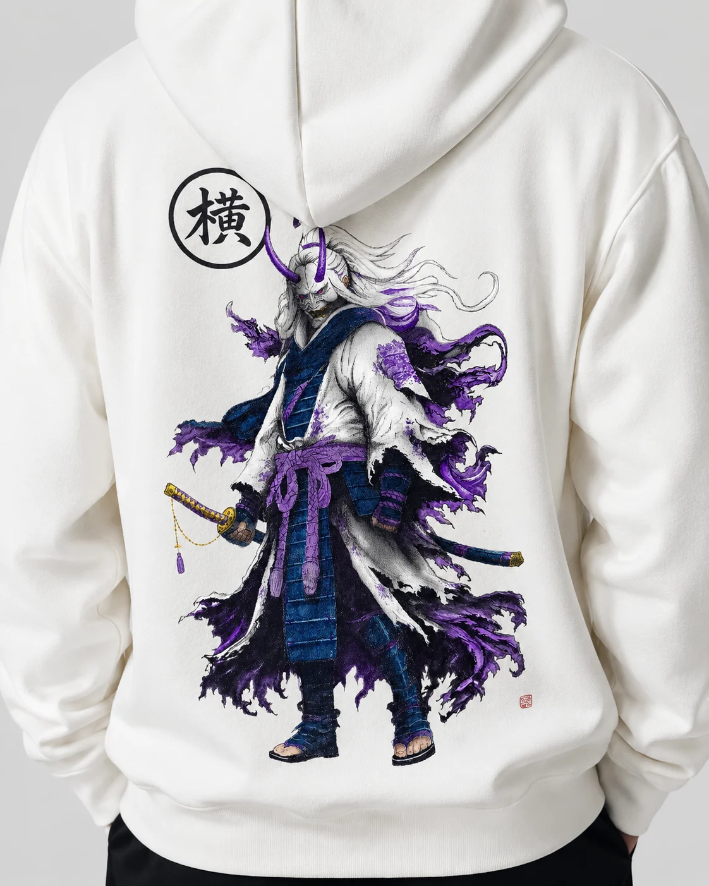
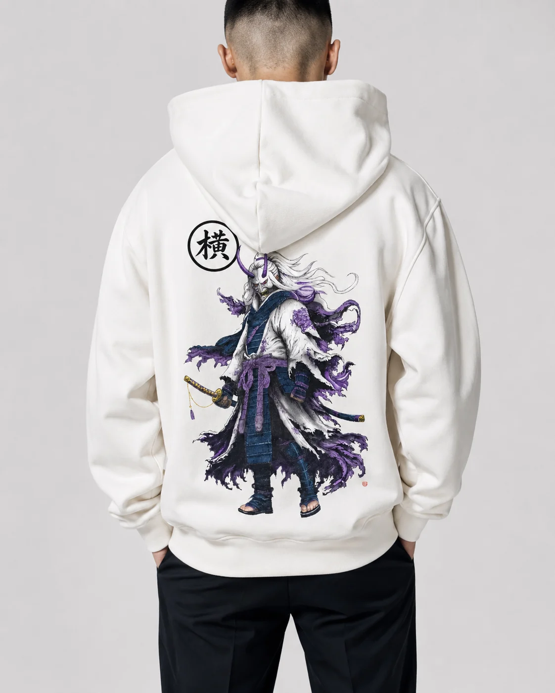
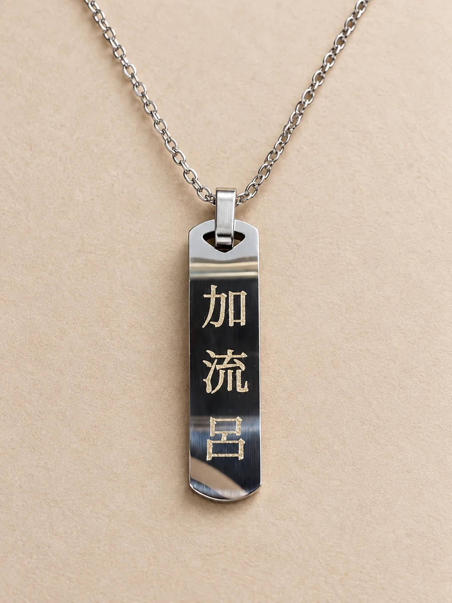

YOKOFURI
Là où l'art de la broderie japonaise rencontre le streetwear contemporain.
Un nom emprunté à une aiguille qui danse.
Le yokofuri est la broderie à aiguille oscillante des ateliers de Yokosuka. L'aiguille balance de gauche à droite, le brodeur guide le tissu à la main et règle la largeur du point avec le genou. C'est elle qui a dessiné les tigres et les dragons des premiers sukajan. Chaque pièce porte une histoire. Chaque fil a sa place.
- 横YOKO
- le côté, l'horizontale
- 振りFURI
- le balancement
- 刺繍SHISHŪ
- la broderie
スカジャンLes Sukajan
Le blouson souvenir né à Yokosuka à la fin des années 1940 : satin brillant, dos entièrement brodé, bord-côte rayé. Faites tourner la galerie, ouvrez une veste et approchez la loupe pour voir chaque point.
Un seul caractère, cinq fils.
Le kanji 横 brodé en relief dans le dos, sur coton noir ou écru. Choisissez la pièce, puis la couleur du fil.


Le Samouraï Oni
Manteau en lambeaux, masque d'oni cornu, katana au fourreau. Le cercle 横 et le petit cachet rouge signent l'illustration comme une estampe.
- Pièce
- Hoodie écru
- Motif
- Dos complet, encre et violet
- Signature
- 横
署名La Signature
YOKOFURI, Japan Inspired. Le logotype brodé en poitrine, en fil blanc, noir ou rouge, et le mon 横 discret côté cœur.

Un nom écrit en kanji, gravé au laser.
Une plaque de métal poli, trois caractères, un faisceau qui trace chaque trait dans une gerbe d'étincelles. Ici 加流呂 se lit ka·ru·ro : des kanji choisis pour le son de chaque syllabe, selon la tradition des ateji.
Chaque pièce porte une histoire.
Toute la collection, les nouveautés et les commandes passent par Instagram. Le lien est en bio.
Suivre sur Instagram @yokofuriofficial